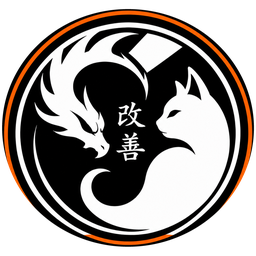

Código como manga
Editor real dentro de los paneles 第N話.
PORTAFOLIO UI/UX ANIMADO
cubic-bezier(.2, .8, .2, 1)

Qué funciona, qué es genérico, qué rompe la marca.
Nombre, idea, boceto y riesgo. Recomienda uno.
Concepto elegido, por archivos, con diffs. Sin romper lo existente.
Ejecutada con resultado real, no supuesto.
Editor real dentro de los paneles 第N話.
Plan · Do · Check · Act como yin-yang con scroll.
Commits, stack e hitos al estilo ending.
Divisores que se dibujan (stroke-dashoffset).
Se estampa al revelar cada proyecto.
Stack, rol y resultado medible.
Kanji en contorno con parallax suave.
index ↔ marca con barrido de pincel.
Filtros FLIP y música sincronizada.